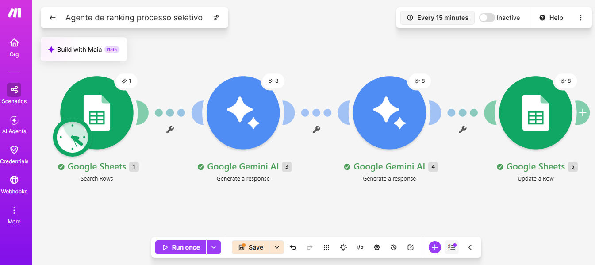
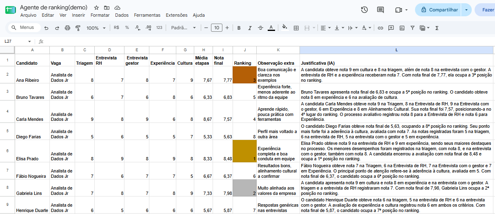
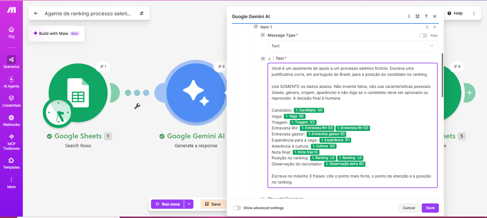
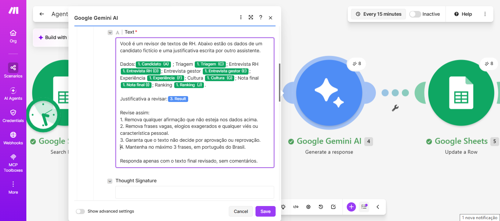

Qual era o objetivo
Comparar candidatos de forma organizada e entregar ao gestor uma lista com a posição de cada pessoa e uma justificativa curta, sem passar horas escrevendo texto por candidato.
A ferramenta apoia quem decide. Ela organiza os dados e escreve o rascunho das justificativas, e a decisão final continua sendo humana.
O problema, em palavras simples
- Comparar candidatos entre várias etapas (triagem, entrevistas) é trabalhoso e fica subjetivo quando não há critérios claros.
- Escrever uma justificativa individual para cada pessoa consome muito tempo, e o estilo muda de um parecer para outro.
O que foi feito
1. A planilha com os critérios
Cada candidato recebe notas de 0 a 10 em: triagem, entrevista de RH, entrevista com o gestor, experiência para a vaga e aderência à cultura. Há também um campo de observação extra, para o que as notas não mostram.
2. Nota final e ranking calculados por fórmula
As três etapas viram uma média. A nota final combina essa média com a experiência e a cultura, usando pesos que podem ser mudados em uma aba própria:
| Critério | Peso |
|---|---|
| Etapas do processo (média) | 40% |
| Experiência para a vaga | 35% |
| Aderência à cultura | 25% |
O ranking sai da conta, e não da IA. Assim qualquer pessoa vê de onde vem cada posição e pode alterar os pesos para ver o resultado mudar.
3. Dois agentes de IA no Make
- Agente 1 (redator): recebe só os dados do candidato e escreve até 3 frases: ponto forte, ponto de atenção e posição no ranking.
- Agente 2 (revisor): lê o texto do primeiro e remove o que não estiver nos dados, frases vagas e qualquer viés ou característica pessoal.
Os dois receberam regras claras: não inventar fatos, não usar idade, gênero, origem ou aparência e nunca decidir por aprovação ou reprovação.
4. Entrega ao gestor
Com as justificativas na planilha, basta baixar a planilha em PDF e enviar ao gestor para análise.
Como ficou (prints)




Horas ganhas (medido em cenário simulado)
Conta: 8 candidatos × 15 minutos = 120 minutos à mão, contra cerca de 1 minuto para rodar o fluxo. O tempo à mão é uma estimativa minha, e não foi cronometrado. A leitura e a revisão humana dos textos continuam necessárias e não estão incluídas nesse minuto.
Limites desta demonstração
- São 8 candidatos fictícios e uma vaga fictícia para demonstrar a automação.
- O ranking apoia a decisão, e não a substitui. Notas e critérios devem ser definidos por pessoas e revisados para evitar viés.